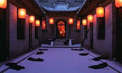
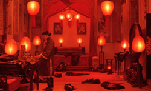
Zhang’s magnum opus is his most acclaimed work, netting awards from most of the major festivals around the world, and an Academy Award nomination for Best Foreign Language Film. The script is based on Su Tong’s novel "Wives and Concubines". The film was shot in the Qiao Family Compound near the ancient city of Pingyao, in Shanxi Province. Although the screenplay was approved by Chinese censors, the final version of the film was banned in China for a period.
Zhang’s collaborations with Gong Li found their apogee in this film, with Li portraying Songlian in astonishing fashion. The highlight of her performance is her transformation from a naive girl to a disillusioned woman, destroyed from the understanding of her fate and the fate of one of the other women in the house.
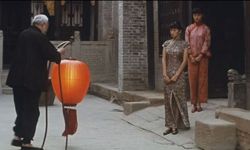
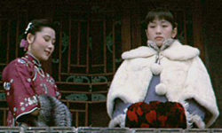
The story revolves around Songlian, who, after her father’s death, becomes the fourth wife of Lord Chen and moves into his mansion. Initially, everything seem to be going well for her, as she enjoys the greatest honours among the four wives. However, as time passes, the first clashes start to appear, and Songlian eventually realizes that the mansion is a place of treachery and politics, through the constant antagonism among the four women. The film’s title refers to one of the key elements of the story, as, each day, Lord Chen announces the wife with whom he will spent the night, and the servants raise and light the red lanterns at her apartments.
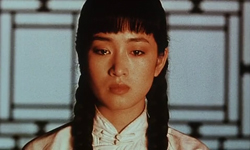
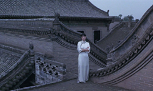
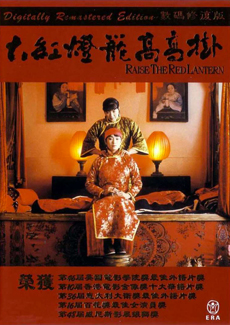
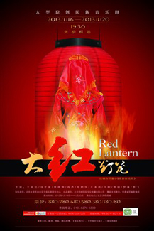
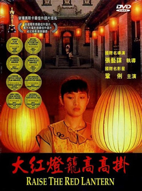
The movie features masterful cinematography with the cooperation of Lun Yang and Yiping Zhao. The cinematography is actually a part of the story, mainly through the master shot of the central courtyard of the house, which is open to the sky, and features the wives’ apartments on both sides and the master’s at the far end. The passing of each season is witnessed through the state of this courtyard as it becomes filled with snow or wet from rain or bathed in sun. Furthermore, the interior of the house is ominously shot, in a clear parallel with Songlian’s plight. Zhang used very bright colours through the Technicolor medium, with its usual richness of red being particularly evident in the titular lanterns.
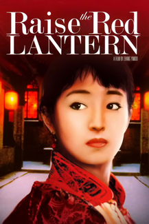
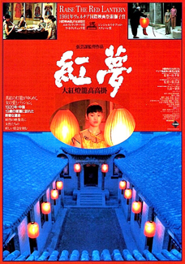
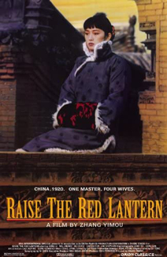